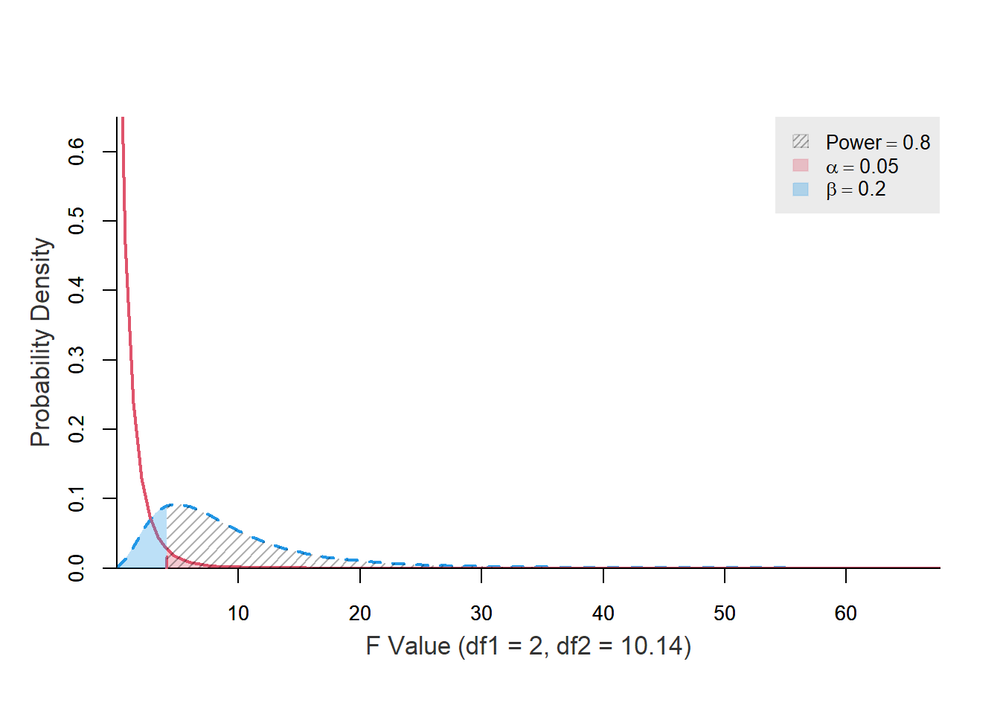

This document focuses on demonstrating general linear models, with a particular emphasis on multiple regression. The penguins dataset from the palmerpenguins package in R, containing measurements of penguin species inhabiting the Palmer Archipelago, is used. The dataset was originally introduced by Gorman et al. (2014).
Can Bill length and Bill depth predict Flipper length?
The goal is to test whether the variables bill_length_mm and bill_depth_mm are good predictors of flipper_length_mm. The definitions of these variables are provided below:
bill_length_mm: numerical value representing bill length in millimeters.
bill_depth_mm: numerical value representing bill depth in millimeters.
flipper_length_mm: integer value representing flipper length in millimeters.
“[…] A problem of this type is called a problem of multiple linear regression because we are considering the regression of \(Y\) on \(k\) variables \(X_{1}, \dots, X_{k}\), rather than on just a single variable \(X\), and we are assuming also that this regression is a linear function of the parameters \(\beta_{0}, \dots, \beta_{k}\). In a problem of multiple linear regressions, we obtain \(n\) vectors of observations (\(x_{i1}. \dots, x_{ik}, Y_{i}\)), for \(i = 1, \dots, n\). Here \(x_{ij}\) is the observed value of the variable \(X_{j}\) for the \(i\)th observation. The \(E(Y)\) is given by the relation
For \(i = 1, \dots, n\), the observed values of \(\hat{y} = \hat{\beta}_{0} + \hat{\beta}_{1} x_{i}\) are called fitted values. For \(i = 1, \dots, n\), the observed values of \(e_{i} = y_{i} - \hat{y}_{i}\) are called residuals(DeGroot & Schervish, 2012, p. 717).
“[…] regression problems in which the observations \(Y_{i}, \dots, Y_{n}\) […] we shall assume that each observation \(Y_{i}\) has a normal distribution, that the observations \(Y_{1}, \dots, Y_{n}\) are independent, and that the observations \(Y_{1}, \dots, Y_{n}\) have the same variance \(\sigma^{2}\). Instead of a single predictor being associated with each \(Y_{i}\), we assume that a \(p\)-dimensional vector \(z_{i} = (z_{i0}, \dots, z_{ip - 1})\) is associated with each \(Y_{i}\)” (DeGroot & Schervish, 2012, p. 736).
General Linear Model
The statistical model in which the observations \(Y_{1}, \dots, Y_{n}\) satisfy the following assumptions (DeGroot & Schervish, 2012, p. 738).
Assumptions
Assumption 1
Predictor is known. Either the vectors \(z_{1}, \dots , z_{n}\) are known ahead of time, or they are the observed values of random vectors \(Z_{1}, \dots , Z_{n}\) on whose values we condition before computing the joint distribution of (\(Y_{1}, \dots , Y_{n}\)) (DeGroot & Schervish, 2012, p. 736).
Assumption 2
Normality. For \(i = 1, \dots, n\), the conditional distribution of \(Y_{i}\) given the vectors \(z_{1}, \dots , z_{n}\) is a normal distribution (DeGroot & Schervish, 2012, p. 737).
Linear mean. There is a vector of parameters \(\beta = (\beta_{0}, \dots, \beta_{p - 1})\) such that the conditional mean of \(Y_{i}\) given the values \(z_{1}, \dots , z_{n}\) has the form
Common variance. There is as parameter \(\sigma^{2}\) such the conditional variance of \(Y_{i}\) given the values \(z_{1}, \dots , z_{n}\) is \(\sigma^{2}\) for \(i = 1, \dots\, n\).
Independence. The random variables \(Y_{1}, \dots , Y_{n}\) are independent given the observed \(z_{1}, \dots , z_{n}\)(DeGroot & Schervish, 2012, p. 737).
Figure 3: Histogram of the bill_length_mm variable with a kernel density estimate, along with a quantile-quantile (Q-Q) plot between the variable and the theoretical quantiles of the normal distribution.
Figure 4: Histogram of the bill_depth_mm variable with a kernel density estimate, along with a quantile-quantile (Q-Q) plot between the variable and the theoretical quantiles of the normal distribution.
Figure 5: Histogram of the flipper_length_mm variable with a kernel density estimate, along with a quantile-quantile (Q-Q) plot between the variable and the theoretical quantiles of the normal distribution.
Checking correlations
Code
data|>plot_ggally()|>rutils:::shush()

Figure 6: Correlation matrix of data variables.
Fitting the model
Code
recipe<-data%>%recipes::recipe(flipper_length_mm~bill_length_mm+bill_depth_mm, data =data)
fit_engine<-fit|>parsnip::extract_fit_engine()fit_engine|>summary()#> #> Call:#> stats::lm(formula = ..y ~ ., data = data)#> #> Residuals:#> Min 1Q Median 3Q Max #> -22.8581 -5.7849 -0.0765 6.0064 23.2186 #> #> Coefficients:#> Estimate Std. Error t value Pr(>|t|) #> (Intercept) 191.36528 6.25580 30.59 <0.0000000000000002 ***#> bill_length_mm 1.46397 0.08774 16.68 <0.0000000000000002 ***#> bill_depth_mm -3.18659 0.23723 -13.43 <0.0000000000000002 ***#> ---#> Signif. codes: 0 '***' 0.001 '**' 0.01 '*' 0.05 '.' 0.1 ' ' 1#> #> Residual standard error: 8.392 on 337 degrees of freedom#> Multiple R-squared: 0.6414, Adjusted R-squared: 0.6393 #> F-statistic: 301.4 on 2 and 337 DF, p-value: < 0.00000000000000022
Code
fit|>broom::augment(data)|>ggplot2::ggplot(ggplot2::aes(flipper_length_mm, .pred))+ggplot2::geom_point()+ggplot2::geom_abline(intercept =0, slope =1, color ="red")+ggplot2::labs(x ="Observed", y ="Predicted")
Figure 7: Relation between fitted and predicted values.
It is important to note that the Kolmogorov-Smirnov and Pearson chi-square test are here just for reference since many authors don’t recommend using them when testing for normality (D’Agostino & Belanger, 1990).
Figure 8: Histogram of the model residuals with a kernel density estimate, along with a quantile-quantile (Q-Q) plot between the residuals and the theoretical quantiles of the normal distribution
Common variance
Code
fit|>broom::augment(data)|>ggplot2::ggplot(ggplot2::aes(.pred, .resid))+ggplot2::geom_point()+ggplot2::geom_hline(yintercept =0, color ="red", linewidth =0.75)+ggplot2::geom_smooth(formula =y~x, method ="loess", color ="grey50")+ggplot2::labs(x ="Fitted values", y ="Residuals")
Figure 9: Relation between the fitted values of the restricted model and its residuals
fit|>stats::predict(data)|>dplyr::mutate( .sd_resid =stats::rstandard(fit_engine)|>abs()|>sqrt())|>ggplot2::ggplot(ggplot2::aes(.pred, .sd_resid))+ggplot2::geom_point()+ggplot2::geom_smooth(formula =y~x, method ="loess", color ="red")+ggplot2::labs( x ="Fitted values", y =latex2exp::TeX("$\\sqrt{Standardized \\ Residuals}$"))
Figure 10: Relation between the fitted values of the model and its standardized residuals
Code
# fit_engine |> lmtest::bptest()fit_engine|>olsrr::ols_test_breusch_pagan()#> #> Breusch Pagan Test for Heteroskedasticity#> -----------------------------------------#> Ho: the variance is constant #> Ha: the variance is not constant #> #> Data #> -------------------------------#> Response : ..y #> Variables: fitted values of ..y #> #> Test Summary #> -----------------------------#> DF = 1 #> Chi2 = 0.09240047 #> Prob > Chi2 = 0.7611474
Code
fit_engine|>olsrr::ols_test_score()#> #> Score Test for Heteroskedasticity#> ---------------------------------#> Ho: Variance is homogenous#> Ha: Variance is not homogenous#> #> Variables: fitted values of ..y #> #> Test Summary #> ----------------------------#> DF = 1 #> Chi2 = 0.1075753 #> Prob > Chi2 = 0.7429217
Independence
Variance inflation factor (VIF)
“Indicator of the effect that the other independent variables have on the standard error of a regression coefficient. The variance inflation factor is directly related to the tolerance value (\(\text{VIF}_{i} = 1/\text{TO}L\)). Large VIF values also indicate a high degree of collinearity or multicollinearity among the independent variables” (Hair, 2019, p. 265).
“Type of influential observation defined by one aspect of influence termed leverage. These observations are substantially different on one or more independent variables, so that they affect the estimation of one or more regression coefficients” (Hair, 2019, p. 262).
Figure 11: Relation between the model studentized residuals and their leverage/influence points.
References
D’Agostino, R. B., & Belanger, A. (1990). A suggestion for using powerful and informative tests of normality. The American Statistician, 44(4), 316–321. https://doi.org/10.2307/2684359
DeGroot, M. H., & Schervish, M. J. (2012). Probability and statistics (4th ed.). Addison-Wesley.
Gorman, K. B., Williams, T. D., & Fraser, W. R. (2014). Ecological sexual dimorphism and environmental variability within a community of antarctic penguins (genus pygoscelis). PLOS ONE, 9(3), e90081. https://doi.org/10.1371/journal.pone.0090081
Hair, J. F. (2019). Multivariate data analysis (8th ed.). Cengage.
Thode, H. C. (2002). Testing for normality. Marcel Dekker.
Source Code
```{r}#| label: setup#| include: falsesource(here::here("R/quarto-setup.R"))```<!-- badges: start -->[](https://www.repostatus.org/#inactive)[](https://choosealicense.com/licenses/mit/)<!-- badges: end -->## OverviewThis document focuses on demonstrating [general linear models](https://en.wikipedia.org/wiki/General_linear_model), with a particular emphasis on multiple regression. The [`penguins`](https://allisonhorst.github.io/palmerpenguins/reference/penguins.html) dataset from the [`palmerpenguins`](https://github.com/allisonhorst/palmerpenguins/) package in R, containing measurements of penguin species inhabiting the [Palmer Archipelago](https://en.wikipedia.org/wiki/Palmer_Archipelago), is used. The dataset was originally introduced by @gorman2014.::: {#fig-penguins-1}{fig-align="center" width="75%"}Artwork by [Allison Horst](https://allisonhorst.com/).:::## Question**Can Bill length and Bill depth predict Flipper length?**The goal is to test whether the variables `bill_length_mm` and `bill_depth_mm` are good predictors of `flipper_length_mm`. The definitions of these variables are provided below:- `bill_length_mm`: numerical value representing bill length in millimeters.- `bill_depth_mm`: numerical value representing bill depth in millimeters.- `flipper_length_mm`: integer value representing flipper length in millimeters.::: {#fig-penguins-2}{fig-align="center"width="75%"}Artwork by [Allison Horst](https://allisonhorst.com/).:::## A brief look on general linear models> See @degroot2012 [pp. 699-707, pp. 736-754] and @hair2019 [pp. 259-370] to learn more."[...] A problem of this type is called a problem of multiple linear regression because we are considering the regression of $Y$ on $k$ variables $X_{1}, \dots, X_{k}$, rather than on just a single variable $X$, and we are assuming also that this regression is a linear function of the parameters $\beta_{0}, \dots, \beta_{k}$. In a problem of multiple linear regressions, we obtain $n$ vectors of observations ($x_{i1}. \dots, x_{ik}, Y_{i}$), for $i = 1, \dots, n$. Here $x_{ij}$ is the observed value of the variable $X_{j}$ for the $i$th observation. The $E(Y)$ is given by the relation$$E(Y_{i}) = \beta_{0} + \beta_{1} x_{i1} + \dots + \beta_{k} x_{ik}$$[@degroot2012, p. 738]### DefinitionsResiduals/Fitted Values: \hspace{20cm} For $i = 1, \dots, n$, the observed values of $\hat{y} = \hat{\beta}_{0} + \hat{\beta}_{1} x_{i}$ are called _fitted values_. For $i = 1, \dots, n$, the observed values of $e_{i} = y_{i} - \hat{y}_{i}$ are called _residuals_ [@degroot2012, p. 717]."[...] regression problems in which the observations $Y_{i}, \dots, Y_{n}$ [...] we shall assume that each observation $Y_{i}$ has a normal distribution, that the observations $Y_{1}, \dots, Y_{n}$ are independent, and that the observations $Y_{1}, \dots, Y_{n}$ have the same variance $\sigma^{2}$. Instead of a single predictor being associated with each $Y_{i}$, we assume that a $p$-dimensional vector $z_{i} = (z_{i0}, \dots, z_{ip - 1})$ is associated with each $Y_{i}$" [@degroot2012, p. 736].General Linear Model: The statistical model in which the observations $Y_{1}, \dots, Y_{n}$ satisfy the following assumptions [@degroot2012, p. 738].### AssumptionsAssumption 1: \hspace{20cm} __Predictor is known__. Either the vectors $z_{1}, \dots , z_{n}$ are known ahead of time, or they are the observed values of random vectors $Z_{1}, \dots , Z_{n}$ on whose values we condition before computing the joint distribution of ($Y_{1}, \dots , Y_{n}$) [@degroot2012, p. 736].Assumption 2: \hspace{20cm} __Normality__. For $i = 1, \dots, n$, the conditional distribution of $Y_{i}$ given the vectors $z_{1}, \dots , z_{n}$ is a normal distribution [@degroot2012, p. 737].(Normality of the error term distribution [@hair2019, p. 287])Assumption 3: \hspace{20cm} __Linear mean__. There is a vector of parameters $\beta = (\beta_{0}, \dots, \beta_{p - 1})$ such that the conditional mean of $Y_{i}$ given the values $z_{1}, \dots , z_{n}$ has the form$$z_{i0} \beta_{0} + z_{i1} \beta_{1} + \cdots + z_{ip - 1} \beta_{p - 1}$$for $i = 1, \dots, n$ [@degroot2012, p. 737].(Linearity of the phenomenon measured [@hair2019, p. 287])Assumption 4: \hspace{20cm} __Common variance__. There is as parameter $\sigma^{2}$ such the conditional variance of $Y_{i}$ given the values $z_{1}, \dots , z_{n}$ is $\sigma^{2}$ for $i = 1, \dots\, n$.(Constant variance of the error terms [@hair2019, p. 287])Assumption 5: \hspace{20cm} __Independence__. The random variables $Y_{1}, \dots , Y_{n}$ are independent given the observed $z_{1}, \dots , z_{n}$ [@degroot2012, p. 737].(Independence of the error terms [@hair2019, p. 287])## Setting up the environment```{r}#| eval: false#| code-fold: truelibrary(broom)library(checkmate)library(cowplot)library(dplyr)library(fBasics)library(GGally)library(ggplot2)library(latex2exp)library(magrittr)library(moments)library(nortest)library(olsrr)library(palmerpenguins)library(parsnip)library(recipes)library(rutils)library(stats)library(tidyr)library(tseries)library(viridis)library(workflows)``````{r}#| include: falselibrary(magrittr)``````{r}#| code-fold: truetest_outlier <-function( x, method ="iqr", iqr_mult =1.5, sd_mult =3 ) { checkmate::assert_numeric(x) checkmate::assert_choice(method, c("iqr", "sd")) checkmate::assert_number(iqr_mult) checkmate::assert_number(sd_mult)if (method =="iqr") { iqr <- stats::IQR(x, na.rm =TRUE) min <- stats::quantile(x, 0.25, na.rm =TRUE) - (iqr_mult * iqr) max <- stats::quantile(x, 0.75, na.rm =TRUE) + (iqr_mult * iqr) } elseif (method =="sd") { min <-mean(x, na.rm =TRUE) - (sd_mult * stats::sd(x, na.rm =TRUE)) max <-mean(x, na.rm =TRUE) + (sd_mult * stats::sd(x, na.rm =TRUE)) } dplyr::if_else(x >= min & x <= max, FALSE, TRUE, missing =FALSE)}``````{r}#| code-fold: trueremove_outliers <-function( x, method ="iqr", iqr_mult =1.5, sd_mult =3 ) { checkmate::assert_numeric(x) checkmate::assert_choice(method, c("iqr", "sd")) checkmate::assert_number(iqr_mult, lower =1) checkmate::assert_number(sd_mult, lower =0) x |>test_outlier(method = method, iqr_mult = iqr_mult, sd_mult = sd_mult ) %>%`!`() %>% magrittr::extract(x, .)}``````{r}#| code-fold: truelist_as_tibble <-function(list) { checkmate::assert_list(list) list |> dplyr::as_tibble() |> dplyr::mutate( dplyr::across(.cols = dplyr::everything(),.fns = as.character ) ) |> tidyr::pivot_longer(cols = dplyr::everything())}``````{r}#| code-fold: truestats_sum <-function( x,name =NULL,na_rm =TRUE,remove_outliers =FALSE,iqr_mult =1.5,as_list =FALSE ) { checkmate::assert_numeric(x) checkmate::assert_string(name, null.ok =TRUE) checkmate::assert_flag(na_rm) checkmate::assert_flag(remove_outliers) checkmate::assert_number(iqr_mult, lower =1) checkmate::assert_flag(as_list)if (isTRUE(remove_outliers)) { x <- x |>remove_outliers(method ="iqr", iqr_mult = iqr_mult) } out <-list(n =length(x),n_rm_na =length(x[!is.na(x)]),n_na =length(x[is.na(x)]),mean =mean(x, na.rm = na_rm),var = stats::var(x, na.rm = na_rm),sd = stats::sd(x, na.rm = na_rm),min = rutils:::clear_names(stats::quantile(x, 0, na.rm = na_rm)),q_1 = rutils:::clear_names(stats::quantile(x, 0.25, na.rm = na_rm)),median = rutils:::clear_names(stats::quantile(x, 0.5, na.rm = na_rm)),q_3 = rutils:::clear_names(stats::quantile(x, 0.75, na.rm = na_rm)),max = rutils:::clear_names(stats::quantile(x, 1, na.rm = na_rm)),iqr =IQR(x, na.rm = na_rm),skewness = moments::skewness(x, na.rm = na_rm),kurtosis = moments::kurtosis(x, na.rm = na_rm) )if (!is.null(name)) out <-append(out, list(name = name), after =0)if (isTRUE(as_list)) { out } else { out |>list_as_tibble() }}``````{r}#| code-fold: trueplot_qq <-function( x,text_size =NULL,na_rm =TRUE,print =TRUE ) { checkmate::assert_numeric(x) checkmate::assert_number(text_size, null.ok =TRUE) checkmate::assert_flag(na_rm) checkmate::assert_flag(print)if (isTRUE(na_rm)) x <- x |> rutils:::drop_na() plot <- dplyr::tibble(y = x) |> ggplot2::ggplot(ggplot2::aes(sample = y)) + ggplot2::stat_qq() + ggplot2::stat_qq_line(color ="red", linewidth =1) + ggplot2::labs(x ="Theoretical quantiles (Std. normal)",y ="Sample quantiles" ) + ggplot2::theme(text = ggplot2::element_text(size = text_size))if (isTRUE(print)) print(plot)invisible(plot)}``````{r}#| code-fold: trueplot_hist <-function( x,name ="x",bins =30,stat ="density",text_size =NULL,density_line =TRUE,na_rm =TRUE,print =TRUE ) { checkmate::assert_numeric(x) checkmate::assert_string(name) checkmate::assert_number(bins, lower =1) checkmate::assert_choice(stat, c("count", "density")) checkmate::assert_number(text_size, null.ok =TRUE) checkmate::assert_flag(density_line) checkmate::assert_flag(na_rm) checkmate::assert_flag(print)if (isTRUE(na_rm)) x <- x |> rutils:::drop_na() y_lab <-ifelse(stat =="count", "Frequency", "Density") plot <- dplyr::tibble(y = x) |> ggplot2::ggplot(ggplot2::aes(x = y)) + ggplot2::geom_histogram( ggplot2::aes(y = ggplot2::after_stat(!!as.symbol(stat))),bins =30, color ="white" ) + ggplot2::labs(x = name, y = y_lab) + ggplot2::theme(text = ggplot2::element_text(size = text_size))if (stat =="density"&&isTRUE(density_line)) { plot <- plot + ggplot2::geom_density(color ="red", linewidth =1) }if (isTRUE(print)) print(plot)invisible(plot)}``````{r}#| code-fold: trueplot_ggally <-function( data,cols =names(data),mapping =NULL,axis_labels ="none",na_rm =TRUE,text_size =NULL ) { checkmate::assert_tibble(data) checkmate::assert_character(cols) checkmate::assert_subset(cols, names(data)) checkmate::assert_class(mapping, "uneval", null.ok =TRUE) checkmate::assert_choice(axis_labels, c("show", "internal", "none")) checkmate::assert_flag(na_rm) checkmate::assert_number(text_size, null.ok =TRUE) out <- data|> dplyr::select(dplyr::all_of(cols))|> dplyr::mutate( dplyr::across(.cols = dplyr::where(hms::is_hms),.fns =~midday_trigger(.x) ), dplyr::across(.cols = dplyr::where(~!is.character(.x) &&!is.factor(.x) &&!is.numeric(.x) ),.fns =~as.numeric(.x) ) )if (isTRUE(na_rm)) out <- out|> tidyr::drop_na(dplyr::all_of(cols))if (is.null(mapping)) { plot <- out|> GGally::ggpairs(lower =list(continuous ="smooth"),axisLabels = axis_labels ) } else { plot <- out|> GGally::ggpairs(mapping = mapping,axisLabels = axis_labels ) + viridis::scale_color_viridis(begin =0.25,end =0.75,discrete =TRUE,option ="viridis" ) + viridis::scale_fill_viridis(begin =0.25,end =0.75,discrete =TRUE,option ="viridis" ) } plot <- plot + ggplot2::theme(text = ggplot2::element_text(size = text_size))print(plot)invisible(plot)}``````{r}#| code-fold: truetest_normality <-function(x,name ="x",remove_outliers =FALSE,iqr_mult =1.5,log_transform =FALSE,density_line =TRUE,text_size =NULL,print =TRUE) { checkmate::assert_numeric(x) checkmate::assert_string(name) checkmate::assert_flag(remove_outliers) checkmate::assert_number(iqr_mult, lower =1) checkmate::assert_flag(log_transform) checkmate::assert_flag(density_line) checkmate::assert_number(text_size, null.ok =TRUE) checkmate::assert_flag(print) n <- x |>length() n_rm_na <- x |> rutils:::drop_na() |>length()if (isTRUE(remove_outliers)) { x <- x |>remove_outliers(method ="iqr", iqr_mult = iqr_mult) }if (isTRUE(log_transform)) { x <- x |>log() |>drop_inf() }if (n_rm_na >=7) { ad <- x |> nortest::ad.test() cvm <- x |> nortest::cvm.test() |> rutils:::shush() } else { ad <-NULL cmv <-NULL } bonett <- x |> moments::bonett.test()# See also `Rita::DPTest()` (just for Omnibus (K) tests). dagostino <- x |> fBasics::dagoTest() |> rutils:::shush() jarque_bera <- rutils:::drop_na(x) |> tseries::jarque.bera.test()if (n_rm_na >=4) { lillie_ks <- x |> nortest::lillie.test() } else { lillie_ks <-NULL } pearson <- x |> nortest::pearson.test()if (n_rm_na >=5&& n_rm_na <=5000) { sf <- x |> nortest::sf.test() } else { sf <-NULL }if (n_rm_na >=3&& n_rm_na <=3000) { shapiro <- x |> stats::shapiro.test() } else { shapiro <-NULL } qq_plot <- x |>plot_qq(text_size = text_size, print =FALSE) hist_plot <- x |>plot_hist(name = name,text_size = text_size,density_line = density_line,print =FALSE ) grid_plot <- cowplot::plot_grid(hist_plot, qq_plot, ncol =2, nrow =1) out <-list(stats =stats_sum( x,name = name,na_rm =TRUE,remove_outliers =FALSE,as_list =TRUE ),params =list(name = name,remove_outliers = remove_outliers,log_transform = log_transform,density_line = density_line ),ad = ad,bonett = bonett,cvm = cvm,dagostino = dagostino,jarque_bera = jarque_bera,lillie_ks = lillie_ks,pearson = pearson,sf = sf,shapiro = shapiro,hist_plot = hist_plot,qq_plot = qq_plot,grid_plot = grid_plot )if (isTRUE(print)) print(grid_plot)invisible(out)}``````{r}#| code-fold: truenormality_sum <-function(x, round =FALSE, digits =5, ...) { checkmate::assert_numeric(x) checkmate::assert_flag(round) checkmate::assert_number(digits) stats <-test_normality(x, print =FALSE, ...) out <- dplyr::tibble(test =c("Anderson-Darling","Bonett-Seier","Cramer-von Mises","D'Agostino Omnibus Test","D'Agostino Skewness Test","D'Agostino Kurtosis Test","Jarque–Bera","Lilliefors (K-S)","Pearson chi-square","Shapiro-Francia","Shapiro-Wilk" ),statistic_1 =c( stats$ad$statistic, stats$bonett$statistic[1], stats$cvm$statistic,attr(stats$dagostino, "test")$statistic[1],attr(stats$dagostino, "test")$statistic[2],attr(stats$dagostino, "test")$statistic[3], stats$jarque_bera$statistic, stats$lillie_ks$statistic, stats$pearson$statistic,ifelse(is.null(stats$shapiro), NA, stats$shapiro$statistic),ifelse(is.null(stats$sf), NA, stats$sf$statistic) ),statistic_2 =c(as.numeric(NA), stats$bonett$statistic[2],as.numeric(NA),as.numeric(NA),as.numeric(NA),as.numeric(NA), stats$jarque_bera$parameter,as.numeric(NA),as.numeric(NA),as.numeric(NA),as.numeric(NA) ),p_value =c( stats$ad$p.value, stats$bonett$p.value, stats$cvm$p.value,attr(stats$dagostino, "test")$p.value[1],attr(stats$dagostino, "test")$p.value[2],attr(stats$dagostino, "test")$p.value[3], stats$jarque_bera$p.value, stats$lillie_ks$p.value, stats$pearson$p.value,ifelse(is.null(stats$shapiro), NA, stats$shapiro$p.value),ifelse(is.null(stats$sf), NA, stats$sf$p.value) ) ) |> dplyr::select(test, p_value)if (isTRUE(round)) { out |> dplyr::mutate( dplyr::across(.cols = dplyr::where(is.numeric),.fns =~round(.x, digits) )) } else { out }}```## Preparing the data```{r}data <- palmerpenguins::penguins |> dplyr::select(bill_length_mm, bill_depth_mm, flipper_length_mm) |> dplyr::mutate( dplyr::across(.cols = dplyr::everything(),.fns =~ dplyr::if_else(test_outlier(.x, , iqr_mult =1), NA, .x) ) ) |> tidyr::drop_na()``````{r}data```## Checking variable distributions:::: {.panel-tabset}### `bill_length_mm`::: {#tbl-bill_length_mm-stats}```{r}data |> dplyr::pull(bill_length_mm) |>stats_sum(name ="bill_length_mm")```Statistics about the `bill_length_mm` variable.:::::: {#fig-bill_length_mm}```{r}data |> dplyr::pull(bill_length_mm) |>test_normality(name ="bill_length_mm")```Histogram of the `bill_length_mm` variable with a kernel density estimate, along with a quantile-quantile (Q-Q) plot between the variable and the theoretical quantiles of the normal distribution.:::### `bill_depth_mm`::: {#tbl-bill_depth_mm}```{r}data |> dplyr::pull(bill_depth_mm) |>stats_sum(name ="bill_depth_mm")```Statistics about the `bill_depth_mm` variable.:::::: {#fig-bill_depth_mm}```{r}data |> dplyr::pull(bill_depth_mm) |>test_normality(name ="bill_depth_mm")```Histogram of the `bill_depth_mm` variable with a kernel density estimate, along with a quantile-quantile (Q-Q) plot between the variable and the theoretical quantiles of the normal distribution.:::### `flipper_length_mm`::: {#tbl-flipper_length_mm}```{r}data |> dplyr::pull(flipper_length_mm) |>stats_sum(name ="flipper_length_mm")```Statistics about the `flipper_length_mm` variable.:::::: {#fig-flipper_length_mm}```{r}data |> dplyr::pull(flipper_length_mm) |>test_normality(name ="flipper_length_mm")```Histogram of the `flipper_length_mm` variable with a kernel density estimate, along with a quantile-quantile (Q-Q) plot between the variable and the theoretical quantiles of the normal distribution.:::::::## Checking correlations::: {#fig-correlation-matrix}```{r}data |>plot_ggally() |> rutils:::shush()```Correlation matrix of data variables.:::## Fitting the model```{r}recipe <- data %>% recipes::recipe( flipper_length_mm ~ bill_length_mm + bill_depth_mm, data = data )``````{r}model <- parsnip::linear_reg() |> parsnip::set_engine("lm") |> parsnip::set_mode("regression")``````{r}workflow <- workflows::workflow() |> workflows::add_recipe(recipe) |> workflows::add_model(model)``````{r}fit <- workflow |> parsnip::fit(data)fit``````{r}broom::tidy(fit)``````{r}broom::augment(fit, data)``````{r}broom::glance(fit) |> tidyr::pivot_longer(cols = dplyr::everything())``````{r}fit_engine <- fit |> parsnip::extract_fit_engine()fit_engine |>summary()```::: {#fig-model-fit}```{r}fit |> broom::augment(data) |> ggplot2::ggplot(ggplot2::aes(flipper_length_mm, .pred)) + ggplot2::geom_point() + ggplot2::geom_abline(intercept =0, slope =1, color ="red") + ggplot2::labs(x ="Observed", y ="Predicted") ```Relation between fitted and predicted values.:::## Performing residual diagnostics### Normality::: {#tbl-model-residual-diag-stats}```{r}fit_engine |> stats::residuals() |>stats_sum(name ="Residuals")```Statistics about the model residuals.:::It is important to note that the Kolmogorov-Smirnov and Pearson chi-square test are here just for reference since many authors don't recommend using them when testing for normality [@dagostino1990].Learn more about normality tests in @thode2002.$$\begin{cases}\text{H}_{0}: \text{Normality} \\\text{H}_{a}: \text{Nonnormality}\end{cases}$$::: {#tbl-model-residual-diag-normality-tests}```{r}fit_engine |> stats::residuals() |>normality_sum()```Normality tests about the model residuals:::Correlation between observed residuals and expected residuals under normality.```{r}#| include: falsetibble::tibble(x =rnorm(100), y =rnorm(100)) %>%lm(y ~ x, .) |> olsrr::ols_test_correlation()``````{r}#| code-fold: falsefit_engine |> olsrr::ols_test_correlation()```::: {#fig-model-residual-diag-correlation}```{r}fit_engine |> stats::residuals() |>test_normality()```Histogram of the model residuals with a kernel density estimate, along with a quantile-quantile (Q-Q) plot between the residuals and the theoretical quantiles of the normal distribution:::### Common variance::: {#fig-model-residual-diag-fit-values-1}```{r}fit |> broom::augment(data) |> ggplot2::ggplot(ggplot2::aes(.pred, .resid)) + ggplot2::geom_point() + ggplot2::geom_hline(yintercept =0, color ="red", linewidth =0.75) + ggplot2::geom_smooth(formula = y ~ x, method ="loess", color ="grey50") + ggplot2::labs(x ="Fitted values", y ="Residuals")```Relation between the fitted values of the restricted model and its residuals:::```{r}.resid_sd_error <- fit_engine |> stats::deviance() |>sqrt() %>%`/`(stats::df.residual(fit_engine)).resid_sd_error```::: {#fig-model-residual-diag-fit-values-2}```{r}fit |> stats::predict(data) |> dplyr::mutate(.sd_resid = stats::rstandard(fit_engine) |>abs() |>sqrt() ) |> ggplot2::ggplot(ggplot2::aes(.pred, .sd_resid)) + ggplot2::geom_point() + ggplot2::geom_smooth(formula = y ~ x, method ="loess", color ="red") + ggplot2::labs(x ="Fitted values", y = latex2exp::TeX("$\\sqrt{Standardized \\ Residuals}$") )```Relation between the fitted values of the model and its standardized residuals:::```{r}#| include: falsefit_engine |>plot(3)``````{r}# fit_engine |> lmtest::bptest()fit_engine |> olsrr::ols_test_breusch_pagan()``````{r}fit_engine |> olsrr::ols_test_score()```### IndependenceVariance inflation factor (VIF): \hspace{20cm} "Indicator of the effect that the other independent variables have on the standard error of a regression coefficient. The variance inflation factor is directly related to the tolerance value ($\text{VIF}_{i} = 1/\text{TO}L$). Large VIF values also indicate a high degree of collinearity or multicollinearity among the independent variables" [@hair2019, p. 265].```{r}#| code-fold: falsefit_engine |> olsrr::ols_coll_diag()```### Measures of influenceLeverage points: \hspace{20cm} "Type of _influential observation_ defined by one aspect of influence termed _leverage_. These observations are substantially different on one or more independent variables, so that they affect the estimation of one or more _regression coefficients_" [@hair2019, p. 262].::: {#fig-model-residual-diag-leverage}```{r}#| code-fold: falsefit_engine |> olsrr::ols_plot_resid_lev()```Relation between the model studentized residuals and their leverage/influence points.:::## References {.unnumbered}::: {#refs}:::